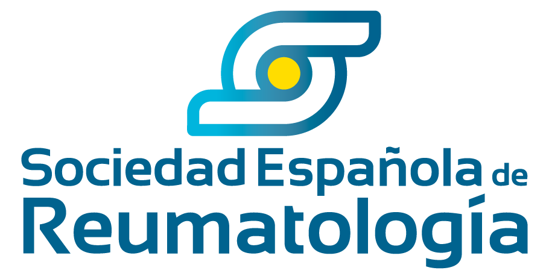
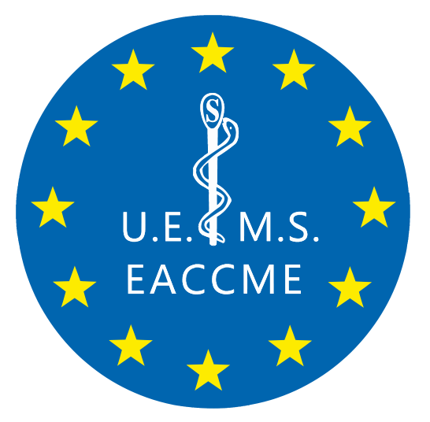

State of the Art in Systemic Lupus Erythematosus
La Transición
Subcutánea
Bloqueo del Interferón Tipo I, equivalencia farmacocinética y autonomía domiciliaria. El programa definitivo para redefinir el control del Lupus.
"El verdadero éxito terapéutico ocurre cuando el paciente recupera el control de su tiempo, alejando la enfermedad del Hospital de Día."
Del Hospital de Día
a la Autonomía Domiciliaria.
Justificación Clínica del Programa
Un hito terapéutico que requiere formación inmediata.
Metodología UX y Certificación EACCME.
Un entorno virtual de aprendizaje diseñado para garantizar la asimilación de los nuevos algoritmos terapéuticos y protocolos biológicos, bajo la estricta navegación secuencial requerida por EACCME.
-
school
Evaluación Formativa Continua
Cuestionarios interactivos (Self-Assessments) al final de cada módulo con feedback razonado referenciado a la evidencia clínica.
-
auto_stories
Contenidos de Clase Mundial
Malla curricular basada estrictamente en ensayos clínicos fase III y publicaciones oficiales del American College of Rheumatology (ACR).
-
bolt
Flexibilidad Asíncrona
Estudio adaptativo 100% online con soporte de simulación y role-play en video para agendas médicas saturadas.
Objetivos del Programa.
Capacitar al especialista a través de tres dimensiones fundamentales para la atención del Lupus Eritematoso Sistémico.
Dimensión Fisiopatológica
Comprender la patogenia del LES mediada por la hiperactivación del Interferón Tipo I y su correlación con la actividad clínica y el daño orgánico.
Manejo Clínico y Transición
Evaluar la equivalencia de eficacia de las formulaciones subcutáneas e implementar protocolos para la transición segura desde el hospital al entorno domiciliario.
Humanismo y Toma de Decisiones
Implementar herramientas de SDM para vencer la aversión a la autoinyección, reduciendo el desgaste profesional del clínico y empoderando a la paciente.
Capacitación Especializada.
Dirigido estrictamente a médicos implicados en el manejo crónico de la autoinmunidad.
Reumatólogos e Inmunólogos
Especialistas prescriptores responsables del diagnóstico, control de brotes e indicación biológica temprana (steroid-sparing).
Medicina Interna (EAS)
Facultativos de Unidades de Enfermedades Autoinmunes Sistémicas responsables del manejo integral y multisistémico del paciente.
Médicos Residentes (MIR)
Inclusión estratégica de R4 y R5 para consolidar la prescripción subcutánea y el modelo humanista desde las etapas formativas.
El Currículum Científico.
3 Módulos de Excelencia.
Estructurado bajo los máximos estándares UX para EACCME, abarcando los apartados pedagógicos obligatorios por módulo, con un Webinar Kick-off internacional.
Actualizar la inmunopatología centrada en el biomarcador del Interferón tipo I y los criterios taxonómicos ACR 2019.
- play_arrow Executive Brief: "La vía del Interferón: De la biología molecular a la diana terapéutica".
- play_arrow Scientific Core: Citoquinas clave en LES y criterios de clasificación EULAR/ACR.
- play_arrow Critical Debate: "Treat-to-Target: El reto de la remisión libre de corticoides".
- play_arrow Further Readings: Epidemiología y carga de la enfermedad severa (Datos RELESSER).
- play_arrow Practice Insights: Algoritmo para detección precoz de actividad refractaria.
- play_arrow Clinical Cases: Paciente joven con manifestaciones refractarias y toxicidad por prednisona.
- play_arrow Self-Assessment: Cuestionario sobre criterios ACR y correlación de firma IFN.
- play_arrow Multimedia: Videocápsula 3D del mecanismo de señalización del receptor de interferón tipo I.
Capacitación clínica en la evidencia de las terapias biológicas subcutáneas (anti-IFN1/BLyS) y establecimiento de protocolos de transición seguros.
- play_arrow Executive Brief: "El valor clínico de la vía subcutánea: Farmacocinética y alivio hospitalario".
- play_arrow Scientific Core: Evidencia pivotal de las formulaciones SC en terapias dirigidas.
- play_arrow Critical Debate: "¿Existen fenotipos que deban permanecer en infusión intravenosa?".
- play_arrow Further Readings: Consensos SER sobre uso racional de terapias biológicas.
- play_arrow Practice Insights: Protocolo Step-by-Step para transición IV a SC.
- play_arrow Clinical Cases: Transición exitosa a la pluma precargada domiciliaria.
- play_arrow Self-Assessment: Cuestionario sobre farmacocinética comparada y pautas de administración.
- play_arrow Multimedia: Instrucción al paciente en el uso de dispositivos autoinyectables.
Integración de la Toma de Decisiones Compartida (SDM), análisis de PROs y prevención activa de la fatiga por compasión en el clínico.
- play_arrow Executive Brief: "El LES vivido: Recuperando la autonomía de la paciente y el tiempo del médico".
- play_arrow Scientific Core: Impacto en fatiga, calidad de vida (PROs) y fundamentos de SDM.
- play_arrow Critical Debate: "Venciendo la tripanofobia y la sensación de abandono clínico".
- play_arrow Further Readings: La magnitud del Burnout en Reumatología.
- play_arrow Practice Insights: Comunicación para educar a la paciente reticente.
- play_arrow Role Play en Video: Reumatólogo aplicando SDM para negociar alta de Hospital de Día.
- play_arrow Self-Assessment: Cuestionario sobre métricas de fatiga, empatía y signos de Burnout.
- play_arrow Multimedia: La segunda víctima y el desgaste por empatía en autoinmunidad.
Dirección Académica.
KOLs Nacionales en Reumatología Clínica e Inmunología.
Dr. Íñigo Rúa-Figueroa
Reumatólogo del Hospital Univ. de Gran Canaria Doctor Negrín y Coordinador Principal del Registro RELESSER.
Dr. José María Álvaro-Gracia
Jefe del Servicio de Reumatología del Hospital General Universitario Gregorio Marañón (Madrid) y expresidente de la SER.
Dra. María Galindo Izquierdo
Especialista de la Unidad de Lupus del Hospital Universitario 12 de Octubre (Madrid). Referente en impacto psicosocial.


Cuidar al Que Cuida.
Redefinir la Autonomía.
Innovación inmunológica apoyada por la compasión clínica.
Nuestra propuesta educativa acompaña al clínico en la transición que devolverá el control de vida a las pacientes con Lupus. Aseguremos juntos la correcta implementación de la vía subcutánea en España.